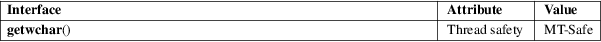

getwchar − read a wide character from standard input
Standard C library (libc, −lc)
#include <wchar.h>
wint_t getwchar(void);
The getwchar() function is the wide-character equivalent of the getchar(3) function. It reads a wide character from stdin and returns it. If the end of stream is reached, or if ferror(stdin) becomes true, it returns WEOF. If a wide-character conversion error occurs, it sets errno to EILSEQ and returns WEOF.
For a nonlocking counterpart, see unlocked_stdio(3).
The getwchar() function returns the next wide-character from standard input, or WEOF.
For an explanation of the terms used in this section, see attributes(7).

C11, POSIX.1-2008.
C99, POSIX.1-2001.
The behavior of getwchar() depends on the LC_CTYPE category of the current locale.
It is reasonable to expect that getwchar() will actually read a multibyte sequence from standard input and then convert it to a wide character.
fgetwc(3), unlocked_stdio(3)